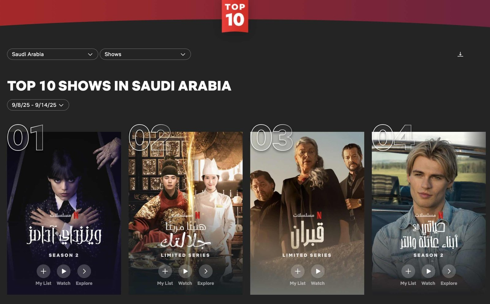
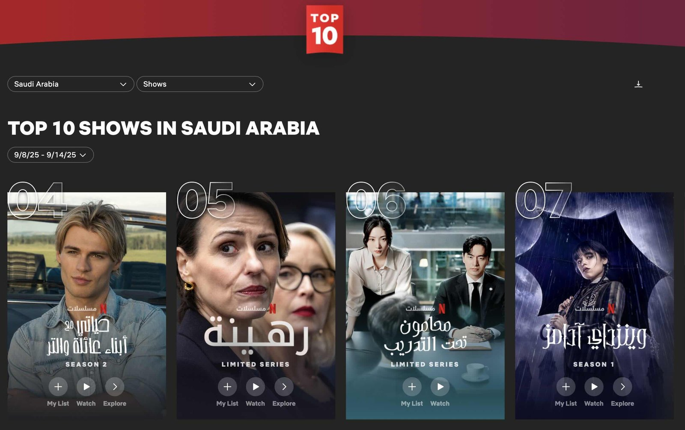
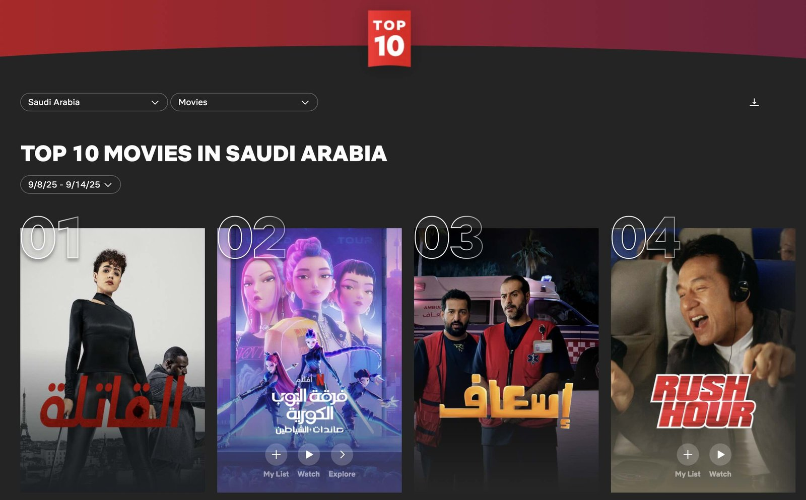
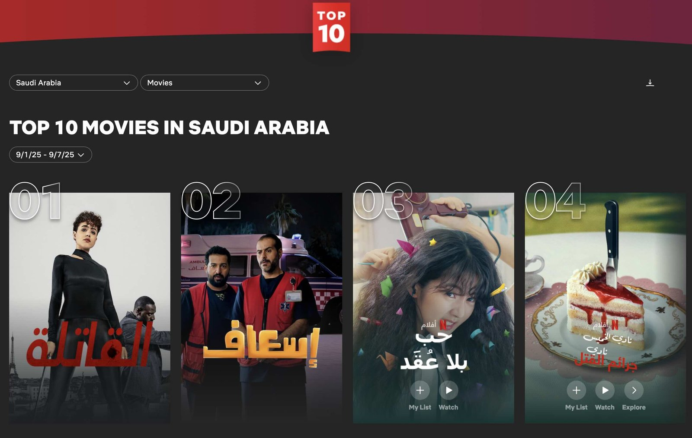

드라마 부문, 한국 작품의 꾸준한 상위권 성과
2025년 9월 사우디아라비아 넷플릭스 차트에서 한국 드라마와 한국문화를 소재로 한 글로벌 영화가 동시에 주목받았다. 한국 드라마 <폭군의 셰프(장태유 연출, fGRD 극본)>는 8월 마지막 주 드라마 부문 1위를 차지한 데 이어, 9월 들어서도 2위와 3위를 오가며 꾸준히 상위권을 유지했다. 화려한 사극 비주얼과 로맨스 서사를 결합한 이 작품은 현지 시청자들에게도 높은 몰입도를 선사하며 한국 사극 장르의 저력을 보여줬다. 동기간 한국 법정극 <에스콰이어: 변호사를 꿈꾸는 변호사들(김재홍 연출, 박미현 극본)> 역시 6위에 올라 다양한 장르의 한국 드라마가 사우디 시청자들의 선택을 받고 있음을 알 수 있었다.


▲ 9월 둘째 주 사우디 넷플릭스 TV 프로그램 부문 각 2위, 6위에 오른 〈폭군의 셰프〉와 〈에스콰이어: 변호사를 꿈꾸는 변호사들〉 — 출처: 넷플릭스
영화 부문, 케이팝과 로맨틱코미디의 주목
영화 부문에서는 흥미로운 움직임이 있었다. 미국에서 제작됐지만 케이팝 아이돌 문화를 전면에 내세운 애니메이션 <케이팝 데몬 헌터스(메기 강·크리스 애펄헌즈 감독)>가 9월 둘째 주 영화 부문 2위에 올랐다. 이 작품은 이미 글로벌 시장에서 화제가 된 바 있으며 사우디에서도 상위권에 오르며 현지 시청자들의 눈길을 끌었다. 글로벌 흥행이 현지에서도 일정 부분 반영된 것으로 해석된다.

▲ 애니메이션 영화 〈케이팝 데몬 헌터스〉, 9월 둘째 주 사우디 넷플릭스 영화 부문 2위 기록 — 출처: 넷플릭스
또 다른 사례로는 로맨틱코미디 영화 <고백의 역사(남궁선 감독)>가 있다. 이 작품은 8월부터 10위권을 지켜왔고, 9월 첫째 주에는 3위까지 올라 꾸준한 인기를 보여줬다.

▲ 한국 영화 〈고백의 역사〉, 9월 첫째 주 사우디 넷플릭스 영화 부문 3위 기록 — 출처: 넷플릭스
사우디에서 확산되는 한류 장르 다변화와 플랫폼 변화
이번 통계는 사우디에서 한국 콘텐츠 소비가 특정 장르에 머물지 않고 점차 다변화되고 있음을 시사한다. 전통적인 로맨스 드라마뿐만 아니라 사극, 법정극, 케이팝을 소재로 한 글로벌 영화까지 시청자들의 선택을 받고 있다. 이는 한국 제작사에게 다양한 소재의 흥행 가능성을 확인시켜 주는 동시에 한류 문화를 활용한 해외 콘텐츠가 현지 시청자에게 다가갈 여지를 넓히고 있다.
한국 콘텐츠는 이미 지난 몇 년간 사우디에서 꾸준히 관심을 받아왔다. 현지 언론은 과거 넷플릭스 시리즈 <지옥(연상호 감독)>을 비롯한 여러 작품을 집중적으로 다룬 바 있으며 "K-드라마 열풍이 사우디 시청자들에게도 뚜렷하게 나타난다."고 전했다. 학술 연구에서도 사우디 젊은 세대를 중심으로 K-드라마와 케이팝의 인기가 높아지고 있으며 이로 인해 미디어 소비 습관, 패션 및 뷰티 트렌드, 한국어와 한국문화에 대한 관심이 눈에 띄게 증가하고 있는 것으로 나타났다.
더불어 2025년 7월 MBC와 넷플릭스가 사우디아라비아를 포함한 중동 및 북아프리카(MENA) 지역에서 MBCNOW 플랫폼을 통해 넷플릭스 글로벌 콘텐츠와 아랍 오리지널, MBC 라이브 채널을 하나의 번들로 제공하는 제휴를 발표했다. 이로써 현지 시청자들의 넷플릭스 접근성이 한층 높아졌고 한국 드라마와 영화가 시청자들에게 노출될 기회도 이전보다 넓어졌다.
사진 출처 및 참고자료
넷플릭스 TOP 10 (사우디아라비아), https://www.netflix.com/tudum/top10/saudi-arabia
Arab News (2024. 10. 30). 'Hellbound' resonates with Saudi audiences amid global K-drama boom
Arab News (2024. 10. 21). Six K-Drama shows to binge on Netflix
Omdia (2025. 8. 4). Netflix and MBC NOW announce partnership to capture Saudi Arabia market
Abdullah, A., & Ubaidillah, I. (2023). The impact of the cross-border cultural phenomenon of the Korean wave on cultural transformation in Saudi Arabia. Center of Middle Eastern Studies (CMES), 16(1), 25–35. ResearchGate